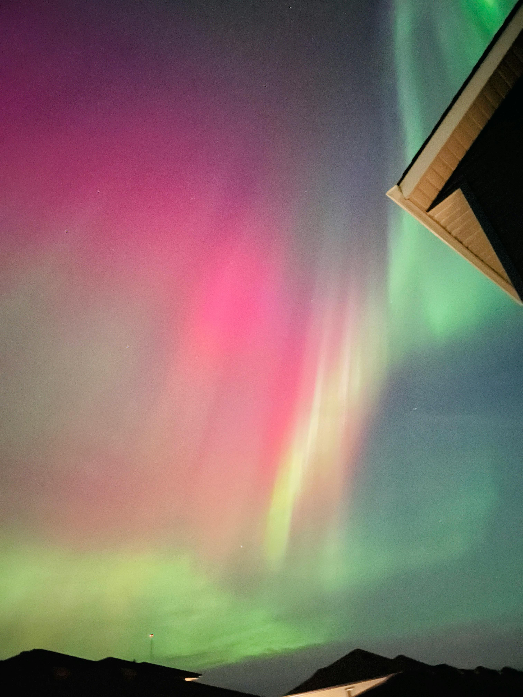
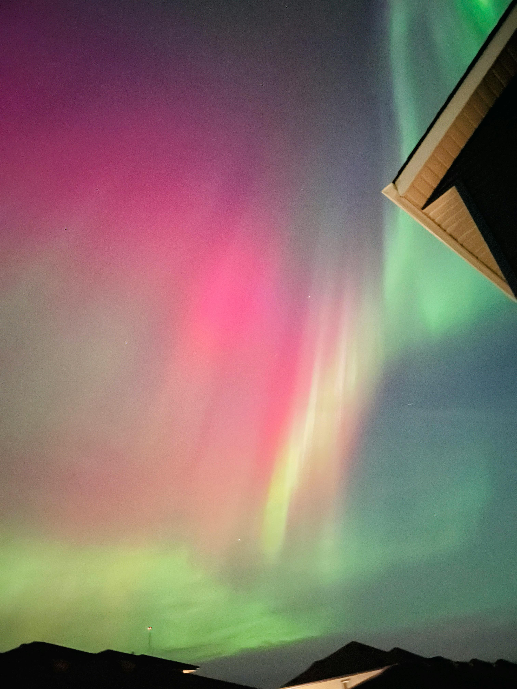

¿Qué son las auroras?
Las auroras son un fenómeno natural causado cuando partículas del Sol chocan con la atmósfera de la Tierra, produciendo luces visibles en los polos.
Tipos de colores
- Verde – Producido por oxígeno a baja altitud
- Rojo – Oxígeno a gran altitud
- Rosa o púrpura – Producido por nitrógeno
Galería de imágenes
 
